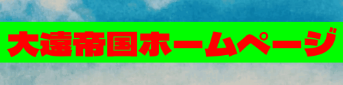

サイト主について
ふぁーらんど
どうも！この軽い（物は言いよう）サイトを作った担当者です！
このサイトを作る上では阿部寛とかhide.liとかを参考にしたかな（？）
バナー
こちらとともにhttps://farland1717.github.io/legacyというリンクを張っていただくといただくとうれしいです。
ちなみにこれ目に優しくないので目に優しいほうが欲しいという方はTwitterのDMかリプかメンションで()
《自己紹介》
— ふぁーらんど (@farland1717) February 17, 2022
へんなやつです。
Twitter初心者ではありませんが初心者です。
よろしくおねがいします。